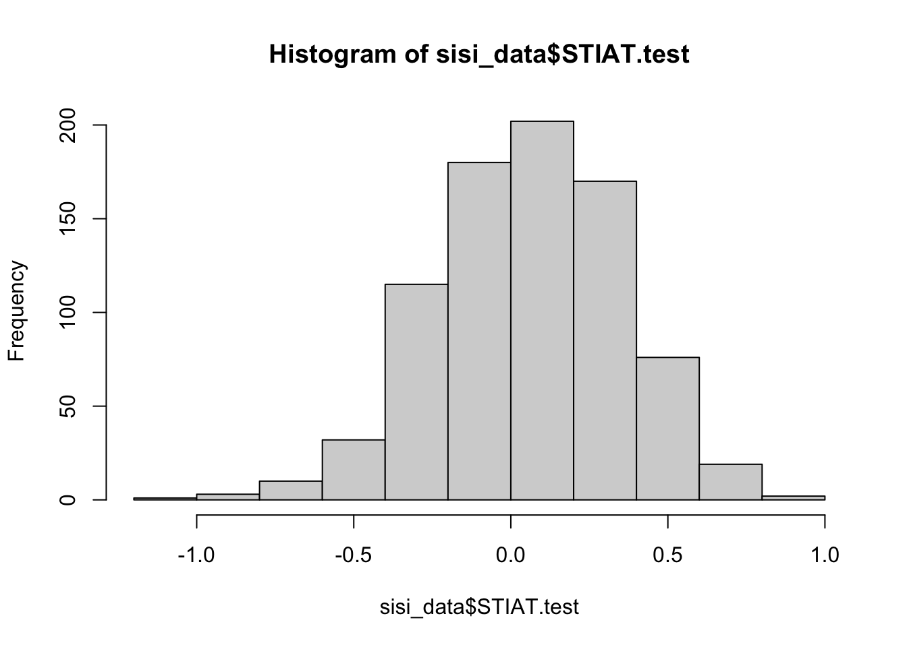
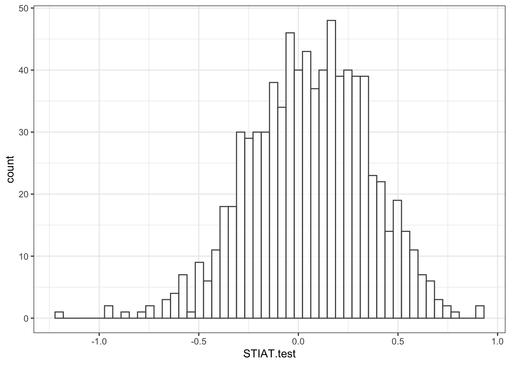
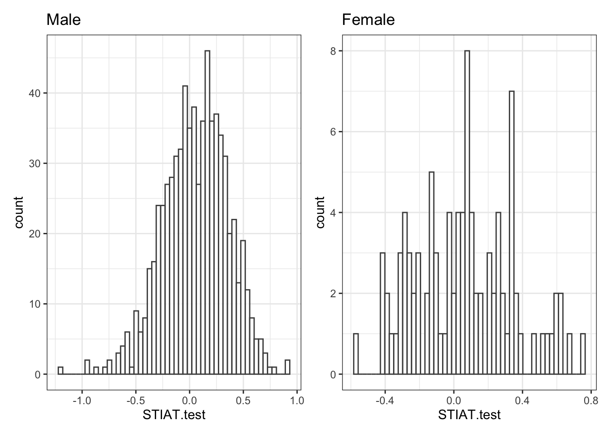
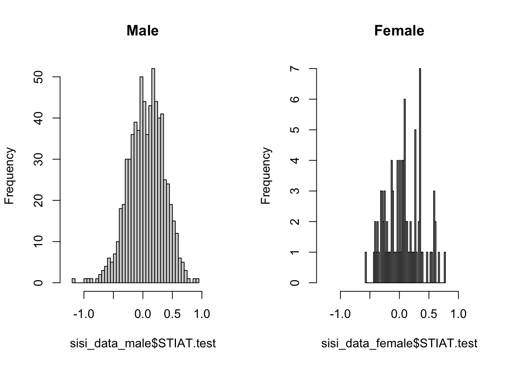
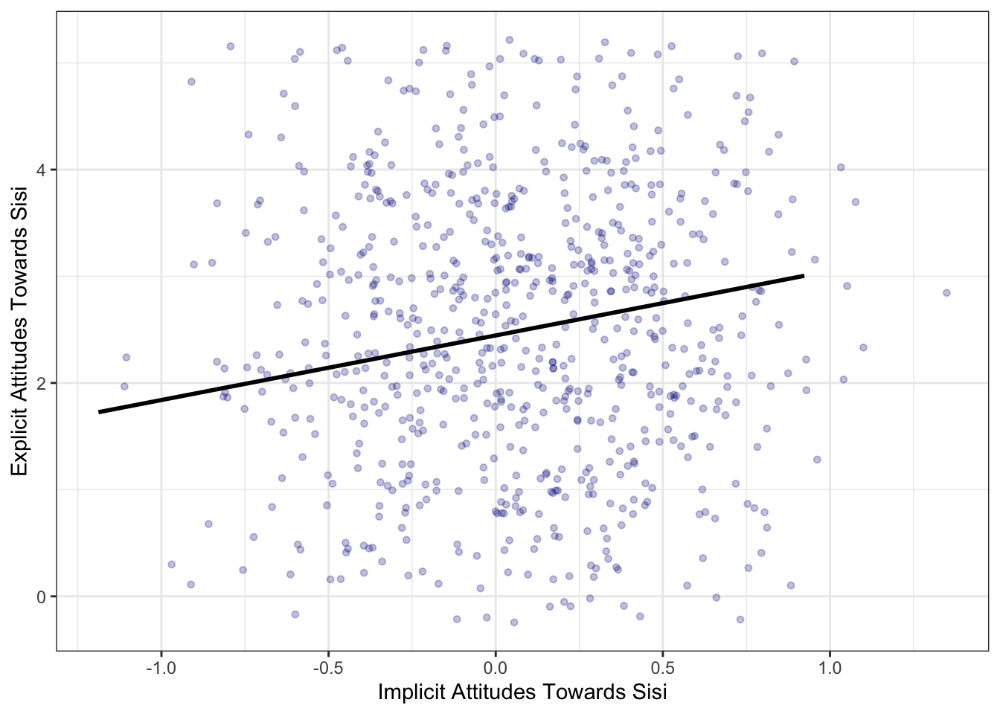
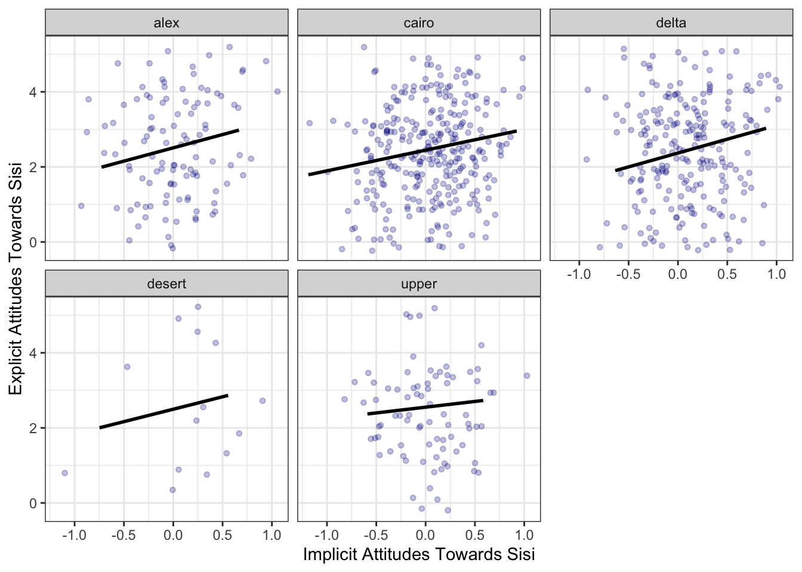
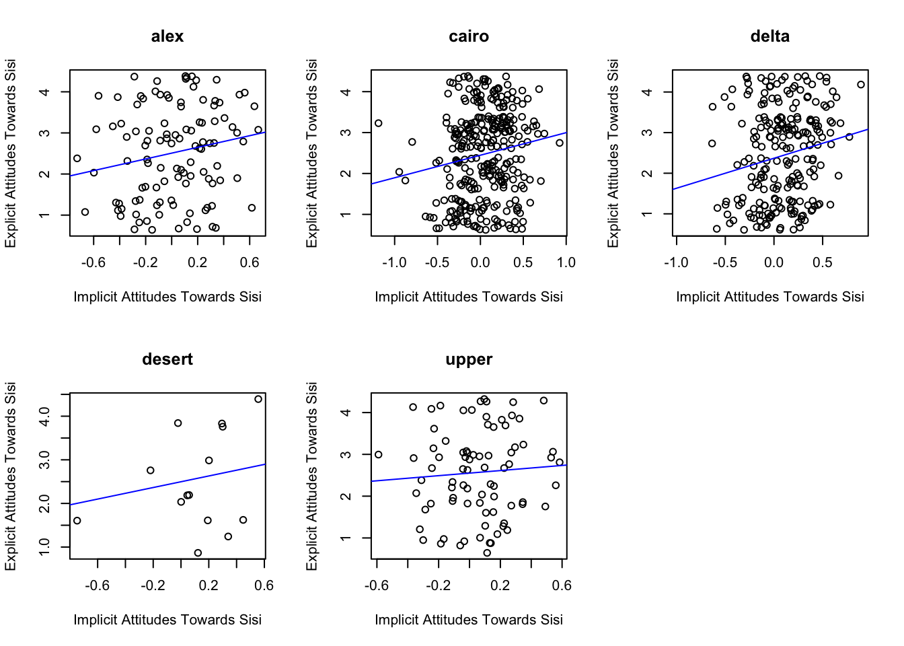

Week 1 Exercise
Investigating support for Sisi in Egypt
We are now ready to tackle a real world example from one of the readings for this week—the article by Rory Truex and Daniel L. Tavana investigating support for Sisi in Egypt using implicit attitudes methods. Below, we will use the same data as used in the article. The full replication data and Questionnaire can be located here. However, in the exercise below, we will be using, to begin with, a simplified dataset containing a subset of these data, which I have prepared for the purposes of this exercise.
Preparing the dataset
The simplified dataset can be found on my GitHub page here. The table below displays the variables included in the dataset. Search through these to get acquainted with how each item is measured.
Our first task is to read in the data from the url to my Github page. The dataset contains a number of variables. To begin with we’re going to work with just seven of these. To create a shorter version of these data including only the variables (columns) we want, we can use the tidyverse command types, which utilize “pipe” functions— %>% — to select the variables we want. In base R we could do the same thing. Both approaches to subsetting the data and generating a new dataframe are described below.
For more practice on the tidyverse, look no further than R for Data Scien ce, which is available free online. In coming weeks, I will only be using tidyverse syntax so it is worth getting used to!
library(tidyverse)
library(patchwork)
dat <- read.csv("https://raw.githubusercontent.com/cjbarrie/teaching_material/master/sisi_data.csv")
#tidyverse way:
sisi_data <- dat %>%
select(STIAT.test, approve_abdel_rev, edu,
gender, income,
location, region)
#base R way:
myvars <- c("STIAT.test", "approve_abdel_rev",
"edu", "gender", "income", "location",
"region")
sisi_data <- dat[myvars]The table below provides an overview of these data and what they are measuring.
| Number | Variable Name | Description |
|---|---|---|
| [1] | STIAT.test | IAT “D-”score |
| [2] | approve_abdel_rev | Explicit SISI approval rating |
| [3] | edu | Education (1-6 scale: 1=Elementary; 6=MA and above) |
| [4] | gender | Gender (1=male/2=female) |
| [5] | income | Income (1-11 scale: 1= Less than 500 LE; 11= More than 10,000 LE) |
| [6] | location | Province in which respondent lives |
Now let’s look at how each of these variables is stored in R.
## 'data.frame': 810 obs. of 7 variables:
## $ STIAT.test : num -0.0395 -0.1634 -0.3407 0.1386 -0.1817 ...
## $ approve_abdel_rev: int 2 3 2 NA 3 3 1 NA 3 2 ...
## $ edu : int 5 5 5 4 5 5 5 5 5 5 ...
## $ gender : int 1 1 1 1 1 1 1 2 1 1 ...
## $ income : int 3 3 1 2 1 2 3 2 2 3 ...
## $ location : chr "benisuef" "cairo" "alexandria" "dakahlia" ...
## $ region : chr "upper" "cairo" "alex" "delta" ...The first variable in our dataframe is STIAT.test. This is the main outcome variable—the D-score—from the IAT procedure used in the article by Truex and Tavana. We can see that this variable is stored as a numeric data type. We can compare this to other data types in the variables column. For example, edu is stored as an integer. This is because edu is a categorical variable coded at increasing integer values on a 1-6 scale.
There are six main data types, which are:
- int: integers
- dbl: doubles (i.e., real numbers)
- chr: character vectors, or strings (i.e., words or sequences of letters)
- lgl: logical, can take values TRUE or FALSE
- fctr: factors, which are categorical variables with fixed possible values
- date: dates
Visualizing the data
Using STIAT.test we can easily reproduce the graph from Figure 3 in the paper. Figure 3 is simply a histogram representing the distribution of this variable. Recall that positive scores indicate more favourable attitudes toward Sisi.

With a bit of help from the ggplot2 package, we can get our graph to look like the published figure in the paper. This package is used by a large number of practitioners in R. It departs somewhat from the logic of the base R language—which you will be more used to—but is arguably more intuitive. The best intro. to data visualization with ggplot2 can be found here. Another very good tutorial on ggplot2, and one which explains the key differences to visualization in base R, can be found here.
Let’s walk through this code step by step to better understand what ggplot2 is doing here. ggplot commands basically just tell R first what dataframe we’re using; i.e., ggplot(data = sisi_data, and after the comma we have a section where we specify our “aesthetic mappings” (or aes). In other words, this is where we tell R what we want on the x- and y-axis. Given that this is a histogram, we don’t have to specify the y-axis because we know that this will simply be a frequency mapping of whatever the x-axis variable is (a histogram is simply a graph of relative frequencies of the x-axis variable over the range of its observed values). We specify on the x- (horizontal) axis, then, STIAT.test, which is the variable measuring implicit attitudes toward Sisi. We then specify what type of graph we want. Here, we select geom_histogram as we want a histogram of the frequencies of each “bin” of this variable. We specify how many of these breaks we want with the argument bins=52. This simply means breaks should run from -1.3 to 1.3 with .05 increments. Why have I chosen this? Well, since our variable runs from -1.3 to 1.3, the range of the variable is 2.6 (1.3+1.3). If we divide 2.6 by .05, we get a nice round number of 52, which effectively visualizes the frequency distribution of this variable. Everything after this is included just to change the colours and theme (i.e., styling) of the graph. You can play around with this and see what happens.
ggplot(data=sisi_data, aes(x=STIAT.test)) +
geom_histogram(bins=52,
col="grey30",fill="white",
alpha = .75) + theme_bw()
Try running this code but change the number of bins we are using. Make sure you understand what is happening to these data when you do this. We can also subset these data by male and female to compare the relative distributions of scores. What do we see here?
##tidyverse "piping" way to subset and visualize together
g1 <- sisi_data %>%
filter(gender==1) %>% # male ==1 in this dataset
ggplot(aes(x=STIAT.test)) +
geom_histogram(bins=52,
col="grey30",fill="white",
alpha = .75) + theme_bw() +
ggtitle("Male")
g2 <- sisi_data %>%
filter(gender==2) %>%
ggplot(aes(x=STIAT.test)) +
geom_histogram(bins=52,
col="grey30",fill="white",
alpha = .75) + theme_bw() +
ggtitle("Female")
g1 + g2
##base R way: subsetting data then plotting
sisi_data_male <- subset(sisi_data, gender==1)
sisi_data_female <- subset(sisi_data, gender==2)
par(mfrow=c(1,2)) #specify visualization params.
hist(sisi_data_male$STIAT.test,
xlim=c(-1.3, 1.3), breaks = 52, main="Male")
hist(sisi_data_female$STIAT.test,
xlim=c(-1.3, 1.3), breaks = 52, main="Female")
Subsetting the data
What can we tell from this? Our sample is heavily male, as becomes clear from the frequencies displayed in the histogram. The mean of both samples is nonetheless pretty similar at around .05. To calculate the mean across both genders in R, we can run the following lines of code:
male <- subset(sisi_data$STIAT.test,sisi_data$gender==1)
female <- subset(sisi_data$STIAT.test,sisi_data$gender==2)
mean(male)## [1] 0.0564617## [1] 0.05882674## 1 2
## 0.05646170 0.05882674#the tidyverse way:
#mean for males:
sisi_data %>%
filter(gender==1) %>%
summarise(mean(STIAT.test))## mean(STIAT.test)
## 1 0.0564617## mean(STIAT.test)
## 1 0.05882674In this paper about attitudes toward Sisi, the authors argue that we can find evidence of attitude dissociation. They make this inference, in a first stage, on the basis of a weak correlation between respondents’ answers to a question directly probing support for Sisi and the implicit attitudes questions that aims to uncover undisclosed or ‘implicit’ attitudes. The relevant variable for the direct support measure is named ‘approve_abdel_rev’ in this dataset and it’s measured on a 1-4 scale. These variables names aren’t particularly intuitive. Let’s rename them something more informative for the purposes of the exercises that follow. We’ll call the direct support question direct_sup and the indirect, or “implicit”, support question indirect_sup. The code to this, in both tidyverse and base R, is below.
#the base R way:
names(sisi_data)[names(sisi_data) == "approve_abdel_rev"] <- "direct_sup"
names(sisi_data)[names(sisi_data) == "STIAT.test"] <- "indirect_sup"#the tidyverse way:
sisi_data <- sisi_data %>%
rename(direct_sup = approve_abdel_rev,
indirect_sup = STIAT.test)We can recreate their scatter plot in Figure 6 with the following lines of code, again in ggplot.
ggplot(sisi_data, aes(x=indirect_sup, y=direct_sup)) +
geom_jitter(color="darkblue", alpha=.25,
size=1.25, width=.5, height=1.25) +
geom_smooth(method=lm, se=FALSE, colour="black") +
xlab("Implicit Attitudes Towards Sisi") +
ylab("Explicit Attitudes Towards Sisi") +
theme_bw()## `geom_smooth()` using formula 'y ~ x'
Does this pattern of dissociation hold across all regions in the sample? To check this we can use the ‘facet_wrap’ function that is part of ggplot. To use this, we simply specify a variable in the dataframe by which we wish to ‘facet’ our visualization. In essence, what we are doing here is running the same lines of code for subsets of the dataframe. Each subset in this case will be the data for a particular region.
ggplot(sisi_data, aes(x=indirect_sup, y=direct_sup)) +
geom_jitter(color="darkblue", alpha=.25,
size=1.25, width=.5, height=1.25) +
geom_smooth(method=lm, se=FALSE, colour="black") +
xlab("Implicit Attitudes Towards Sisi") +
ylab("Explicit Attitudes Towards Sisi") +
facet_wrap(~region) +
theme_bw()
#it is a lot less intuitive to do this in base R:
regions <- sort(unique(sisi_data$region))
par(mfrow=c(2,3))
for (i in seq_along(regions)) {
regst <- regions[i]
dat <- subset(sisi_data, region==regst)
plot(jitter(dat$direct_sup,2) ~ dat$indirect_sup,
main=regst,
xlab = "Implicit Attitudes Towards Sisi",
ylab = "Explicit Attitudes Towards Sisi")
abline(lm(dat$direct_sup ~ dat$indirect_sup,
data = dat), col = "blue", pch=3)
}
What can we conclude after subsetting the data like this. Do the correlations like similar across regions?
Coding tasks
- What is the the correlation between the implicit Sisi attitudes (‘SIAS.test’) and explicit Sisi attitudes item (‘approve_abdel_rev’) for each region of Egypt? The relevent function to compute a correlation coefficient in R is ‘cor()’. Hint: you should subset the data by region.
- Calculate the percentage of Christian and Muslim respondents who exhibit “classic dissociation” in this sample.
- Create scatterplots of explicit and implicit support for Sisi for the Christian and Muslim subsets of the data.